User guide for Kagevi Subtitles 0.6.1 — how to get live subtitles on stream, what each screen does, and how to fix common problems.
README · Architecture · Changelog
About
Kagevi Subtitles turns your microphone speech into live subtitles for OBS — with optional translation, styling, TTS, and Twitch chat reading.
Everything runs on your PC. There is no account and no Kagevi cloud. The app listens on http://127.0.0.1:8765 by default (this machine only).
| You want… | Use… |
|---|---|
| Fast setup, Google recognition in Chrome | Web Speech (default) |
| Offline recognition, no Chrome worker | Local ASR (Parakeet / ONNX) |
| Subtitles in OBS | Browser Source → /overlay |
| Optional cloud / free translation | Translation tab (up to 4 lines) |
| Read subtitles or chat aloud | TTS module |
Current version line: 0.6.1 (first Kagevi release was 0.5.0).
IMPORTANT In OBS, use exactly:
http://127.0.0.1:8765/overlay
After updating the app, reload that Browser Source if the overlay looks stuck or blank.
System requirements
| Need | Why |
|---|---|
| Windows 10 or 11 (64-bit) | Supported platform |
| WebView2 Runtime | Powers the app windows (usually already on Windows 11; installer can add it on Windows 10) |
| Google Chrome | Only if you use Web Speech. Not required for Local ASR alone |
| Microphone | Granted in Chrome (Web Speech) or chosen in the Local ASR window |
| Internet | Optional for cloud translation; also needed the first time Local ASR downloads models / runtimes |
No Python or Node.js is required to run the installed app.
Install and update
- Run
Kagevi Subtitles_0.6.1_x64-setup.exe(or the latest setup from the releases page). - Open Kagevi Subtitles.exe.
- To update later: close the app → install the new setup over the old one. Your settings in
user-data/stay put.
The dashboard can show an update banner when a newer GitHub release exists. Download opens the release page (the app does not auto-install updates).
Useful local addresses
| Address | What it is |
|---|---|
http://127.0.0.1:8765/ |
Main dashboard |
http://127.0.0.1:8765/overlay |
OBS Browser Source page |
http://127.0.0.1:8765/google-asr |
Chrome Web Speech worker |
http://127.0.0.1:8765/tts |
TTS module window |
http://127.0.0.1:8765/local-asr |
Local ASR module window |
Quick start
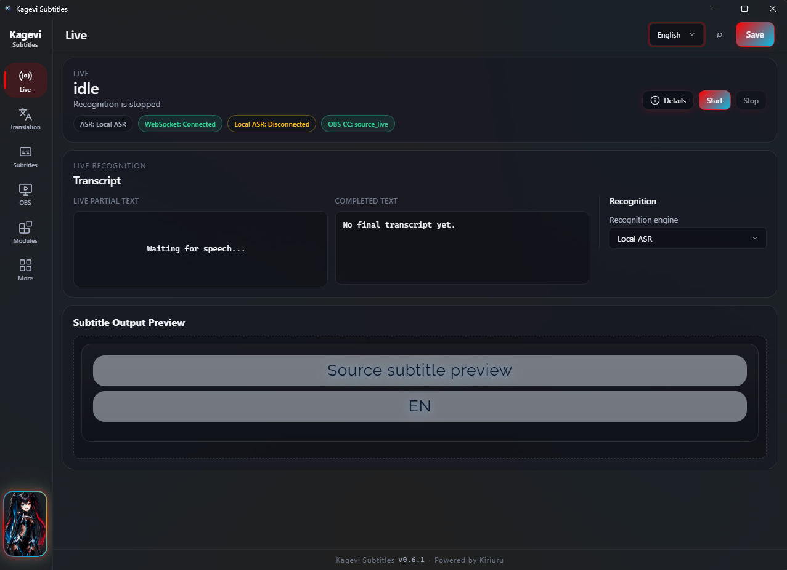
Live — Start/Stop, recognition status, transcript, subtitle preview
First stream setup (about 5 minutes)
- Install and launch Kagevi Subtitles.
- In OBS, add a Browser Source:
- URL:
http://127.0.0.1:8765/overlay - Width/height: match your canvas (or full canvas and crop).
- URL:
- On the Live tab, pick recognition:
- Web Speech (default) — Chrome will open when you Start.
- Local ASR — only appears after setup is finished (see Local ASR).
- Optional: open Translation, turn translation on, enable at least one line, pick a provider (three work with no API key — see below).
- Optional: open Subtitles / Style to set preset, TTL, fonts, and colors.
- Press Start.
- Speak — check the Live preview, then check OBS.
Start and Stop (plain English)
| Button | What happens |
|---|---|
| Start | Begins recognition, translation (if enabled), and optional OBS captions. Uses your current on-screen settings, even if you have not pressed Save yet. |
| Stop | Stops recognition. For Web Speech, the Chrome worker is closed. Subtitle state resets. |
Preview on Live
Before Start, the preview shows sample text so you can tune style. After Start, it shows what OBS should see. Saving settings alone will not wipe that preview when idle.
Compact window
Use compact layout for a tall, phone-like window on a second monitor (Settings → Layout, or Ctrl+K). Live stays in focus; other hubs stay one tap away.
Choose recognition
You only need one path at a time.
| Web Speech (default) | Local ASR | |
|---|---|---|
| Engine | Google Chrome Web Speech | Parakeet on your PC (ONNX) |
| Chrome window | Yes — keep it open while streaming | No |
| Internet for recognition | Usually yes (Google) | No (after models are downloaded) |
| Best when… | You want the familiar Chrome path | You want offline / no worker window |
| Setup | Mic permission in Chrome | Modules → Local ASR wizard until ready |
TIP New users: start with Web Speech. Switch to Local ASR later if you want offline recognition.
Troubleshooting
TIP Check in this order: Start pressed? → recognition working? → translation on? → OBS URL correct?
No subtitles anywhere
- Pressed Start on Live?
- Web Speech: Is the Chrome
/google-asrwindow open? Mic allowed in Chrome? Prefer not minimizing it for long periods (it can sit behind other apps). - Local ASR: Is Local ASR selected on Live? Did Modules → Local ASR show ready? Mic selected there?
- Open More → Tools & Data and check runtime / recognition status.
I see source text, but no translation
- Translation tab → translation is enabled.
- At least one translation line is enabled.
- Provider needs a key? Add it under provider settings. Or switch to a keyless provider (Google Web, Free Web Translate, Microsoft Edge).
- Look at translation results / errors on the same tab — delays can also mean a newer phrase cancelled an older request (normal).
OBS is empty
- Browser Source URL ends with
/overlay, not/(dashboard). - Subtitles: source and/or translations are set to visible.
- TTL is not extremely short (text can vanish before you notice).
- After an app update: right‑click the source → Refresh.
- Brief disconnects: overlay often keeps the last frame while reconnecting — that is expected.
Local ASR mode missing on Live
Finish Modules → Local ASR until the module reports ready (deps + model + warm load). CPU is enough; CUDA is optional.
Worker keeps dying (Web Speech)
- Unstable network to Google speech endpoints.
- Stop → Start, or relaunch the worker from Tools.
- Advanced:
VOICESUB_TRACE_BROWSER=1writeslogs/browser-trace.jsonl(for bug reports).
Text stuck on screen after Stop / expiry
Update to the latest build and refresh the OBS Browser Source. The overlay must clear empty frames; an old build can leave a ghost line.
Where things are
Primary destinations (left rail / bottom nav):
| Place | What you do there |
|---|---|
| Live | Start/Stop, recognition mode, status, transcript, subtitle preview |
| Translation | Providers, up to 4 lines, cache, live/realtime options |
| Subtitles | Overlay layout, visibility, order, how long completed lines stay |
| OBS | Copy overlay URL; optional Closed Captions |
| Modules | Open TTS and Local ASR windows |
| More | Theme, Word Replace, Tools & Data, Settings, Help |
Command palette (Ctrl+K or header search): jump to a panel, Start/Stop, Save, export diagnostics.
| Tab under More / hubs | Guide section |
|---|---|
| Style (under Subtitles) | Subtitle style |
| UI Theme | UI theme |
| Word Replace | Word replacement |
| Tools & Data | Tools and data |
| Settings | Settings |
| Help | Help |
|
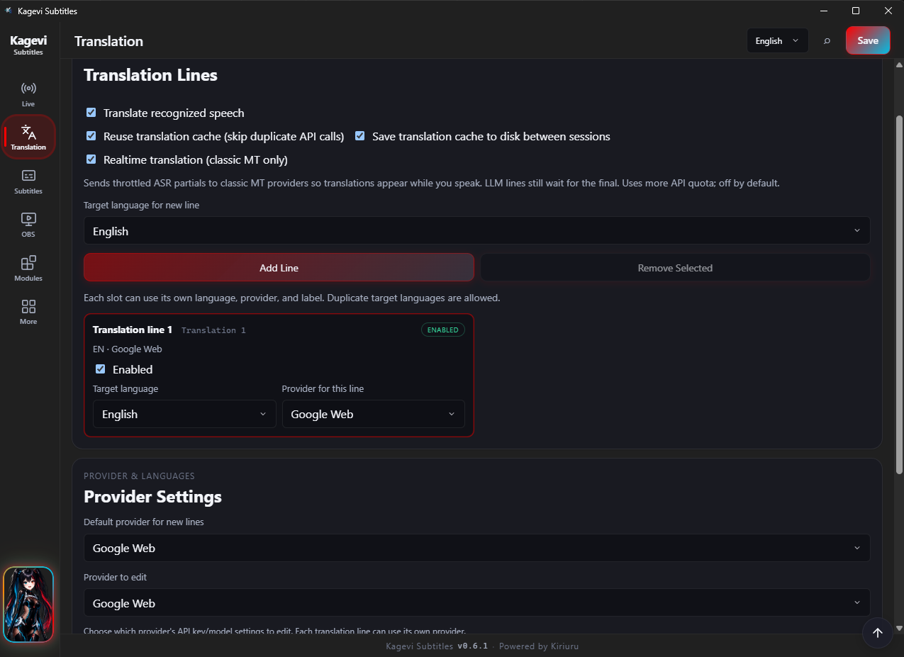 Translation |
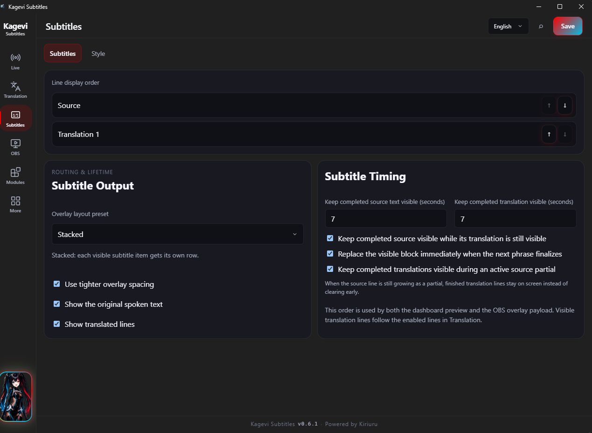 Subtitles |
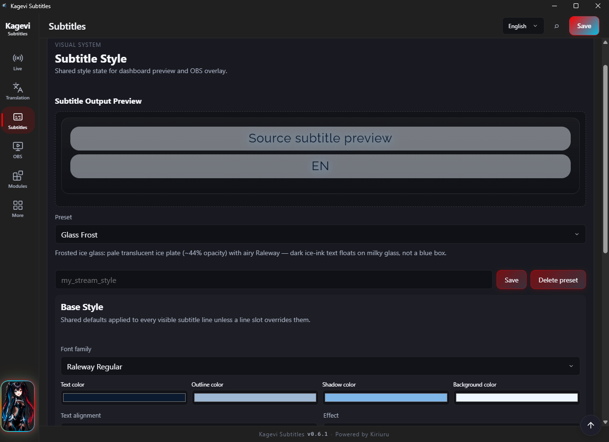 Style |
|
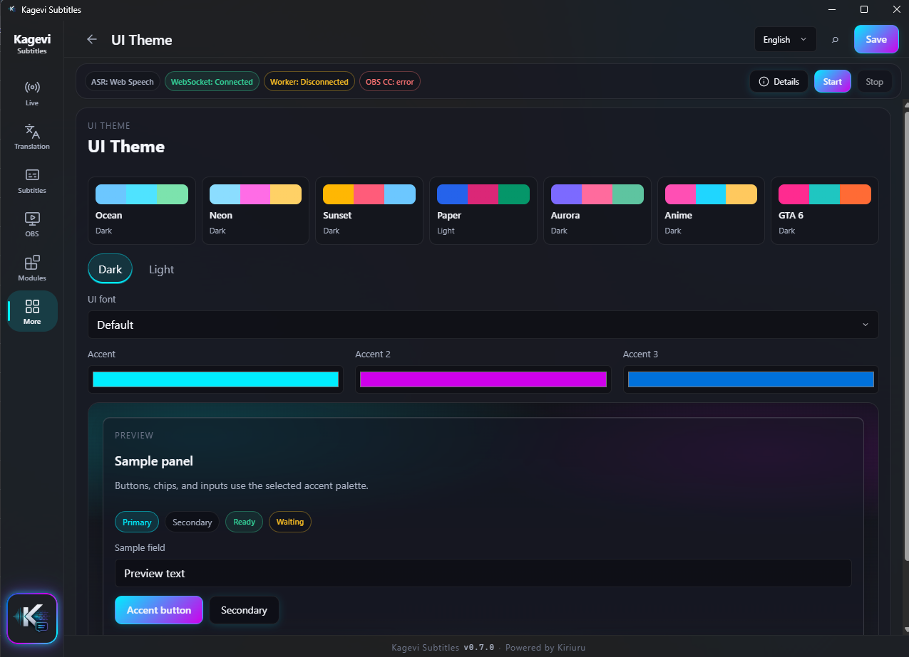 UI Theme |
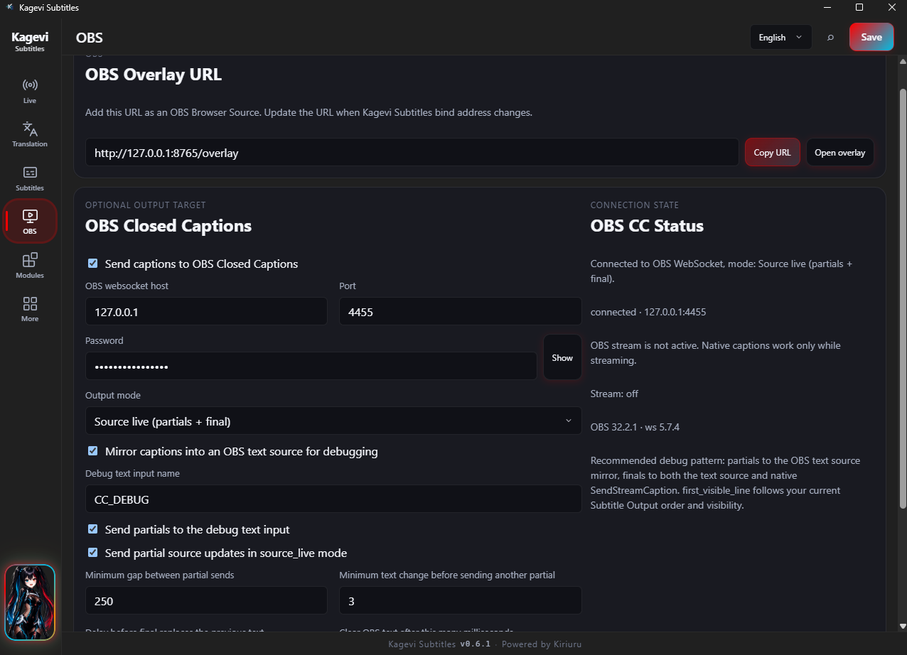 OBS |
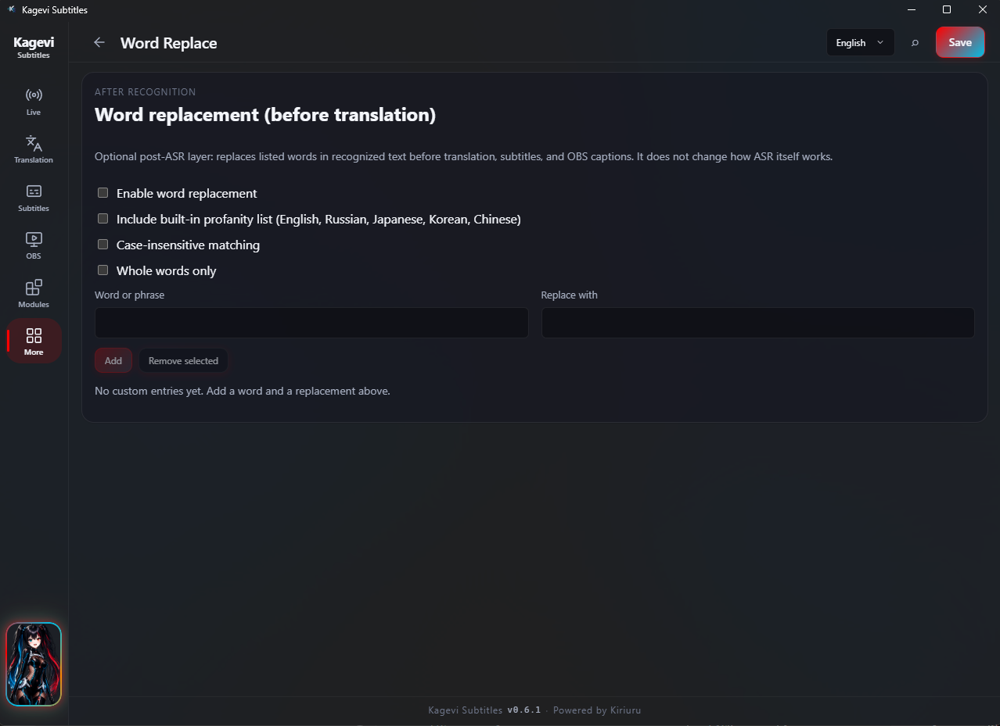 Word Replace |
|
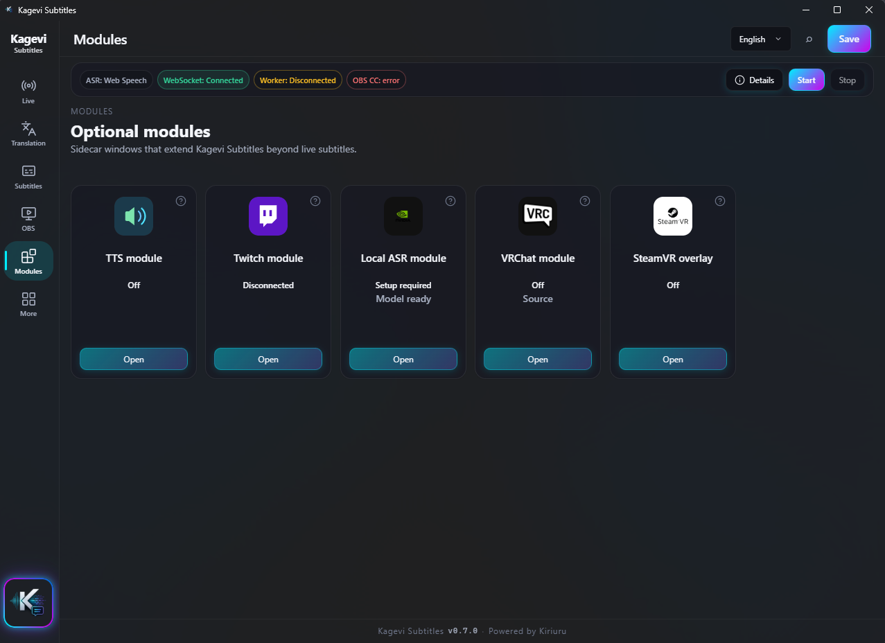 Modules / TTS · Local ASR |
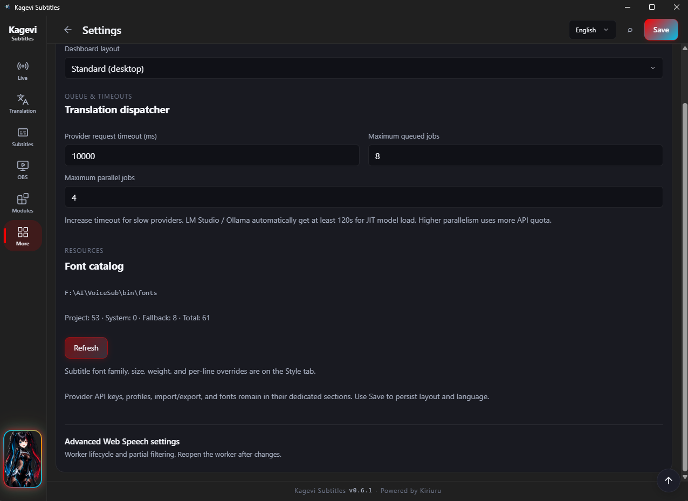 Settings |
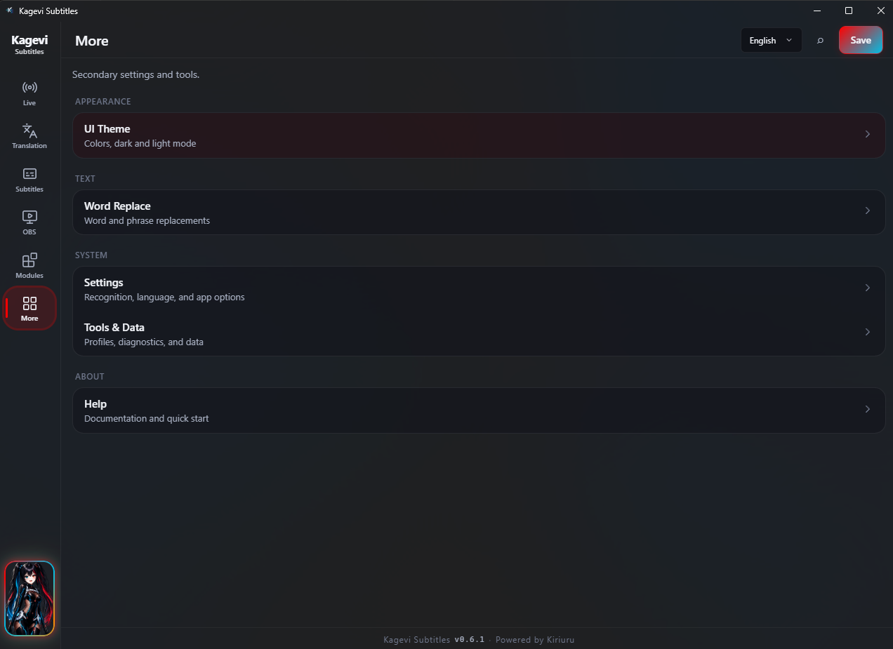 More / Help |
Browser Speech (Web Speech)
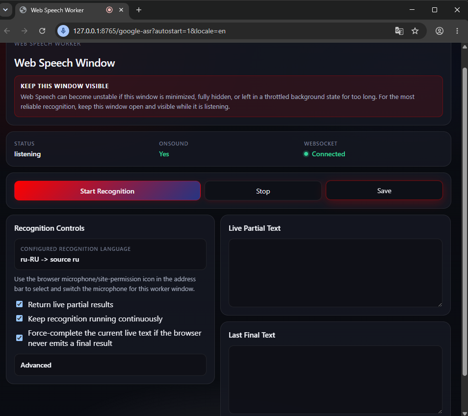
Web Speech worker — Chrome window at
/google-asr (keep open while listening)
How it feels day to day
- On Live, leave recognition on Web Speech (browser Google).
- Press Start — a separate Chrome window opens to the worker page.
- Allow the microphone in that Chrome window.
- Leave the window open (it may sit behind OBS/game). Closing it stops recognition.
The microphone list in the main dashboard stays empty on purpose — the mic is chosen in Chrome, not in Kagevi settings.
Worker window rules (important)
- It is a normal Chrome window with an address bar (not a hidden tab, not app mode).
- It uses its own Chrome profile under
user-data/so it does not mess with your daily browser. - Windows is tuned so Chrome is less likely to “sleep” the tab while you stream.
Recognition language
Set the speech language in Settings (Web Speech / recognition language). Match the language you actually speak. The worker window also shows live text — if it shows words but Live does not, recognition works and the problem is downstream (restart the session).
Advanced Web Speech (optional)
Settings → Advanced Web Speech settings — forced finals, reconnect delays, session length, and related knobs. Each field has an ! help tip.
After big changes: Save → Stop → Start, and reopen the worker if it was already open.
Idle “force final” timing is edited in the worker window itself (force_finalization_timeout_ms), not only in Advanced settings.
Some older config names (pause_to_finalize_ms, hard_max_phrase_ms, …) are ignored at runtime — leave them alone.
Stability notes
- Sessions rotate about every 3 minutes by default to keep Chrome recognition healthy.
- After a long finalized phrase (≥200 characters), the worker refreshes its internal buffer so the next lines stay clean.
- Screen wake lock can keep the machine from sleeping while recognition runs.
Local ASR
Offline speech recognition on your machine (Parakeet + ONNX). No Chrome worker while Live uses this mode.
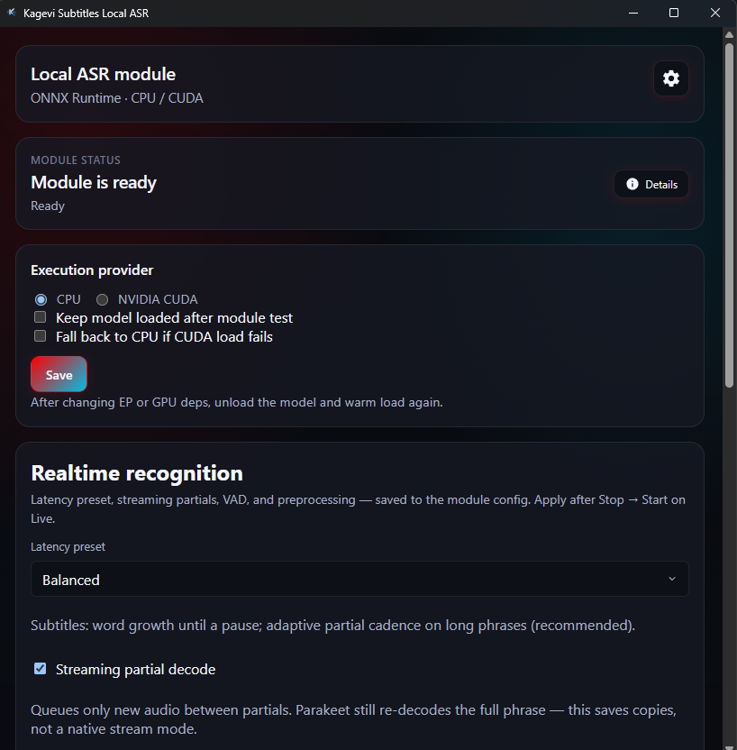
Modules / Local ASR — open the sidecar and finish setup
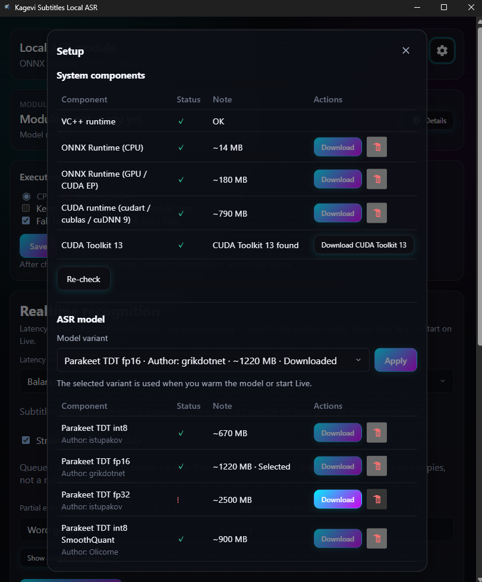
Setup — download ORT / optional CUDA pieces and a Parakeet model
Setup once
- Open Modules → Local ASR (separate window).
- Follow the checklist: check/download runtime → download a model → warm-load → pick a mic → run a short test until you see final text.
- When the module is ready, close the window if you like — settings stay in
user-data/modules/local-asr/. - On Live, choose Local ASR, then Start.
CPU is enough for Live. CUDA is optional (faster on supported NVIDIA GPUs after extra downloads).
After changing VAD / realtime options
Stop → Start on Live so the new mic/pipeline settings apply.
What you get
Same subtitle, translation, style, and OBS path as Web Speech — only the speech engine changes.
Translation
Translation — turn the pipeline on, pick providers, up to 4 lines
Simple setup
- Enable translation.
- Enable one or more lines (
translation_1…translation_4). - Pick target language and provider per line.
- Save (or just Start — Start also takes the current UI snapshot).
ASR still works with translation off (source-only subtitles).
Lines
Each line is independent: on/off, language, provider, short label. More enabled lines = more work for providers. Order on screen is controlled under Subtitles.
Providers without an API key
Good starting points if you do not want cloud accounts:
| Provider | Notes |
|---|---|
| Google Web | Free browser-style Google path |
| Free Web Translate | Separate free Google path (own rate limits) |
| Microsoft Edge Translate | Anonymous Edge / Azure-quality path |
There are 17 providers total (Google API, DeepL, Azure, LibreTranslate, OpenAI-compatible, China providers, and more). Keys stay only in your local config.toml.
Cache
Memory and optional disk cache (user-data/translation-cache/) avoid repeating the same request. If you change LLM prompts a lot, clear or expect old cached answers until the text changes.
Optional realtime translation
Off by default. When enabled for classic MT providers, growing speech can show draft translations before the phrase finishes. LLM providers still wait for finals. Good for snappy overlays; use finals-only if you prefer stable text.
How lines behave on screen
A finished subtitle stays until the next phrase finishes. Late translations can still arrive. If a newer phrase supersedes an old request, the old job is dropped — that is intentional, not a random failure.
Subtitles
Subtitles — layout preset, what is visible, order, how long lines stay
| Setting | In plain words |
|---|---|
| Overlay preset | How rows are stacked: single, dual-line, or stacked. Compact spacing is a separate toggle. OBS URL can override with ?preset=…&compact=1. |
| Visibility | Show source, show translations, max translation lines on screen. |
| TTL / lifetime | How long a finished line stays after speech stops. |
| Line order | Order for preview, OBS overlay, and “first visible line” Closed Captions. |
IMPORTANT While you start a new sentence, the previous finished translation can stay until the new sentence finalizes. That keeps the screen readable during natural pauses.
Subtitle style
Subtitle Style — fonts, colors, effects, per-line overrides
- Pick a built-in preset or customize fonts, size, outline, shadow, background, alignment.
- Effects include fade, slide, zoom, glow, and similar.
- Style source and each translation_1…4 separately if you want.
- Live preview and OBS share the same look — Save (or Start) after edits.
UI theme
UI Theme — dark/light and accent colors for the app chrome
This only changes the dashboard / module windows. OBS subtitle look comes from Subtitle style, not this theme.
Theme, language, and UI font can sync live across windows without a full Save when the app pushes a UI sync.
OBS
OBS — overlay URL and optional Closed Captions
Overlay (what most streamers need)
- Copy the URL from the OBS tab (default
http://127.0.0.1:8765/overlay). - Paste into an OBS Browser Source.
- Leave Kagevi running while you stream.
Optional URL tweaks: ?preset=stacked&compact=1 (and similar). Prefer changing presets in the app unless you need a one-off OBS override.
Closed Captions (optional)
Sends captions into OBS via WebSocket (handy for platforms that surface CC, e.g. Twitch).
- Enable in the OBS tab; set host / port / password to match OBS WebSocket v5.
- Choose what to send: live source, finals only, a translation line (
translation_1…translation_4), or the first visible line. - Native stream captions only work while OBS is actually streaming.
- Debug mirror can push text into an OBS text source for testing.
Word replacement
Word Replace — fix ASR mistakes before translation and display
Use this to clean names, slang, or misheard words before they hit translation and the overlay.
- Custom find/replace pairs.
- Optional built-in lists / stem rules (en/ru) and light obfuscation cleanup.
- Case and whole-word options (CJK uses substring matching).
Twitch chat TTS has its own filter switches in the TTS window; dashboard pairs do not automatically apply there.
TTS module
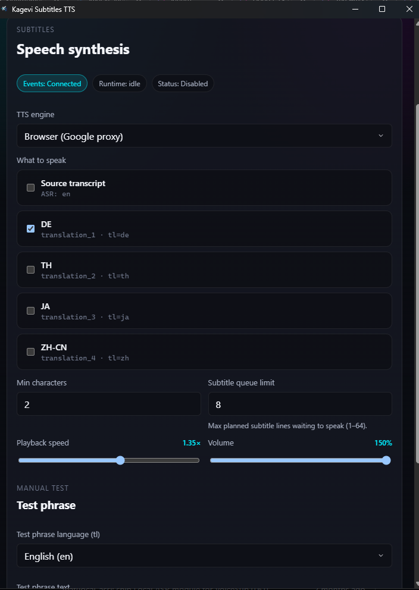
TTS — speak subtitles aloud
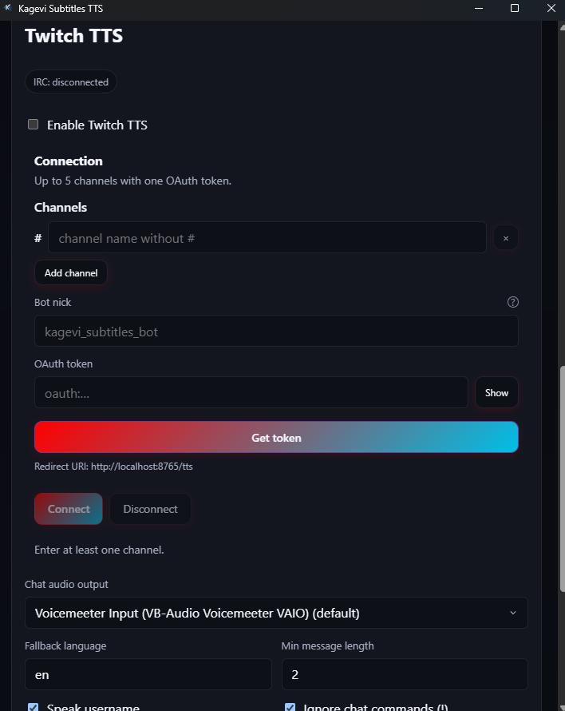
Twitch TTS — read chat from up to five channels
Open from Modules → TTS. Settings live in user-data/modules/tts/ (you can close the window).
Subtitle speech
- Turn the speech channel on, pick voice / rate / volume.
- Volume goes up to 150%.
- Playback modes:
- Native — lowest latency, rate fixed at 1.0×
- Sonic — change speaking rate while keeping pitch
- You can send speech and Twitch to different output devices.
Use the sample / Speak control in the module to test without going Live.
Twitch chat TTS
- Connect with Twitch OAuth (system browser).
- Add up to 5 channel logins (without
#). - Filters (emotes, links, symbols, language) apply live — usually no reconnect needed.
- If IRC drops, the module retries with backoff; bad auth stops instead of looping forever.
- ? next to bot nick explains the IRC login used for
JOIN.
The Google TTS helper binary is bundled under the TTS module runtime — you do not install Python yourself.
Tools and data

Tools & Data — profiles, status, diagnostics ZIP
| Feature | Why you care |
|---|---|
| Runtime status | See if recognition / translation / OBS CC are alive |
| Profiles | Save and switch named setups (user-data/profiles/*.json) |
| Export diagnostics | ZIP with redacted config + logs — attach when asking for help |
| Logs folder | logs/core.log, runtime-events.log, session-latest.jsonl next to the app data |
Deep diagnostics (advanced)
Turn on full logging in Settings / config (logging.full_enabled) or set VOICESUB_DEEP_DIAGNOSTICS=1. Extra JSONL traces can be enabled with VOICESUB_TRACE_* variables. Only needed when hunting a tough bug.
Settings
Settings — language, layout, Advanced Web Speech
UI language
English, Russian, Japanese, Korean, Chinese. Saved with your config. The Web Speech worker follows the locale when it launches.
Layout
Standard desktop window vs compact second-monitor layout.
Fonts / other
Project subtitle fonts come from bin/fonts/. Advanced Web Speech options are described in Browser Speech.
Help
More — Theme, Word Replace, Settings, Tools & Data, Help
In-app Help summarizes recognition, translation, subtitles, OBS, and tools. For deeper contracts (HTTP/WS/IPC), see Technical Architecture.
Privacy and local-first
- By default the app listens only on localhost (
127.0.0.1). Other devices on your LAN cannot reach it. - LAN bind (
VOICESUB_ALLOW_LAN=1) is for advanced setups — WebSockets then have no login, so use only on trusted networks. - Translation API keys and Twitch tokens stay on your disk.
- Diagnostics ZIP redacts secrets before export.
- The Chrome worker uses an isolated profile (not your everyday Chrome sync).
Glossary
| Term | Meaning |
|---|---|
| Live | Main screen with Start/Stop and preview |
| partial | Text still being recognized (draft) |
| final | Phrase finished by the recognizer |
| translation line / slot | One of up to four translated rows (translation_1…translation_4) |
| overlay | The /overlay page you add in OBS |
| Web Speech / browser worker | Chrome window that listens with Google Web Speech |
| Local ASR | Offline Parakeet recognition module |
| completed block | Finished subtitle that stays until the next phrase finishes |
| TTS module | Separate window for speaking subtitles / Twitch chat |
| TTL | How long a finished line remains on screen |